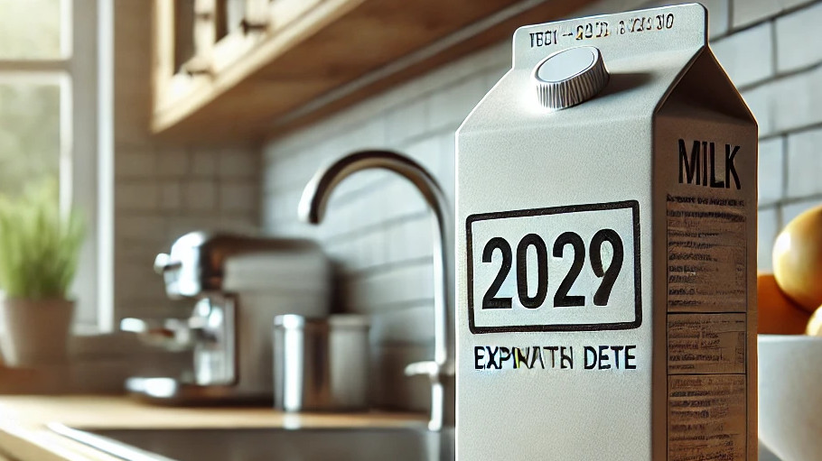

Porque tu tiempo vale
mas que contar latas
Empieza hoy a transformar tu alacena en un espacio perfectamente
organizado. Con Smart Alacena, todo está bajo control, fácil y rápido.
Escanea y guarda
Con Smart Alacena, añadir productos a tu inventario es tan fácil como escanear el código de barras. La app reconoce automáticamente el producto, eliminando la necesidad de ingresarlo manualmente. Esto no solo ahorra tiempo, sino que también reduce errores comunes al registrar tus alimentos.
Gestion automatica de inventario
Mantén un control preciso de tus productos sin esfuerzo. Smart Alacena registra las cantidades, fechas de caducidad y el estado de cada producto en tiempo real. Así, siempre sabrás exactamente qué tienes disponible y evitarás desperdiciar alimentos.
Recibe alertas de caducidad
Nunca más dejes que los alimentos se venzan sin darte cuenta. La app te enviará notificaciones oportunas cuando un producto esté cerca de su fecha de caducidad. De esta manera, puedes priorizar su uso y evitar desperdicios innecesarios.
Sugerencias de recetas
Aprovecha al máximo lo que tienes en casa con recetas personalizadas basadas en tu inventario. Smart Alacena analiza los productos que ya tienes y sugiere recetas prácticas y deliciosas. ¡Deja que la creatividad culinaria fluya sin complicaciones!
Ya ellos empezaron a organizar ¿Y tú?
"Desde que uso Smart Alacena, mi cocina está más organizada que nunca. Antes siempre se me olvidaba qué tenía en mi despensa, ¡ahora no pierdo nada y ahorro mucho tiempo!"
- Carla Perez, ama de casa
"La función de notificaciones de caducidad me ha salvado de desperdiciar comida. Ahora siempre sé qué debo usar primero, y eso también me ha ayudado a ahorrar dinero."
- José Lugaro, estudiante universitario
"¡Me encanta lo fácil que es escanear los productos y tener mi inventario al día! Es una aplicación que realmente simplifica mi vida, especialmente cuando hago las compras."
- Ana Ramos, madre trabajadora
"Lo que más me gusta es la opción de recetas basadas en lo que tengo en casa. Ahora puedo cocinar sin preocuparme por salir a comprar ingredientes de último momento."
- Sofia Torres, chef aficionada
"Nunca pensé que organizar mi alacena pudiera ser tan sencillo. Con Smart Alacena, todo está bajo control y sé exactamente qué tengo. ¡Es indispensable!"
- Maria Cuevas, emprendedora
"La app no solo me ayuda a organizarme, también me da tranquilidad. Sé que no voy a olvidar qué tengo o cuándo algo vence. ¡Es la mejor herramienta para la cocina!"